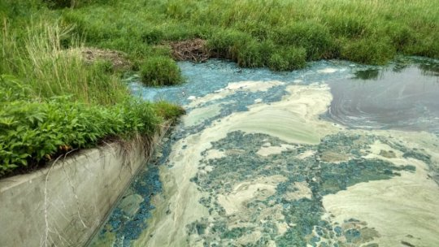

News
March 29, 2019
Climate change impacts accelerating: WMO report
Physical signs of climate change are accelerating as temperatures drive towards increasingly dangerous levels.
March 27, 2019
Arctic warming contributes to drought
According to new research, changes similar to those after the ice age 10,000 years ago could be in store today because a warming Arctic weakens the temperature difference between the tropics and the poles.

March 26, 2019
Eutrophication of lakes will significantly increase greenhouse gas emissions
The greening or eutrophication of the world's lakes will increase the emission of methane into the atmosphere by 30 to 90 percent during the next 100 years, say researchers.
March 14, 2019
Tectonics in the tropics trigger Earth's ice ages
Over the last 540 million years, the Earth has weathered three major ice ages -- periods during which global temperatures plummeted, producing extensive ice sheets and glaciers that have stretched beyond the polar caps.
March 14, 2019
Ocean sink for human-made carbon dioxide measured
Scientists have determined the amount of human-made carbon dioxide emissions taken up by the ocean between 1994 and 2007.
March 12, 2019
Climate change limits forest recovery after wildfires
New research suggests climate change makes it increasingly difficult for tree seedlings to regenerate following wildfires in low-elevation forests, which could contribute to abrupt forest loss.